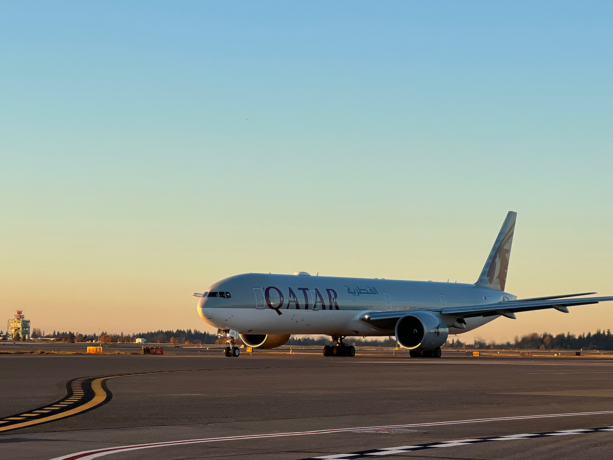
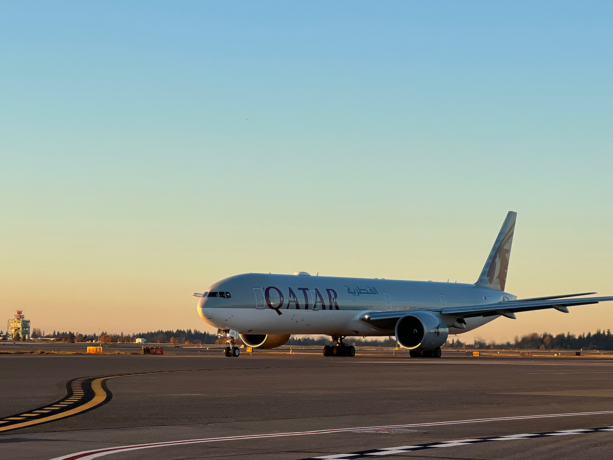

مرحباً أنا محمد
I'm a
Welcome, I'm a coder and aviation enthusiast who loves working on code and watching planes. This site is my living resume, showcasing projects, ideas, and lessons learned. Take a look around and let's connect!
A good programmer is someone who always looks both ways before crossing a one-way street.~ Doug Linder
 
